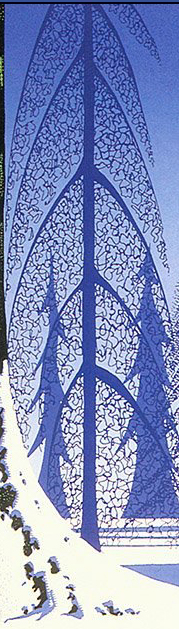
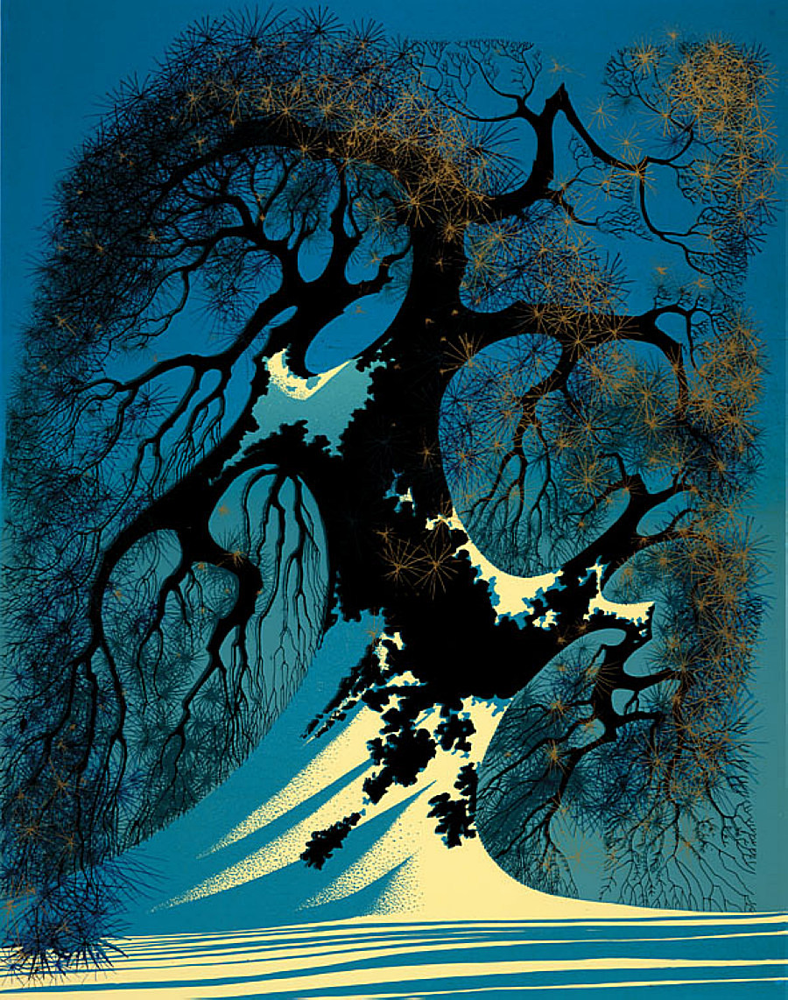
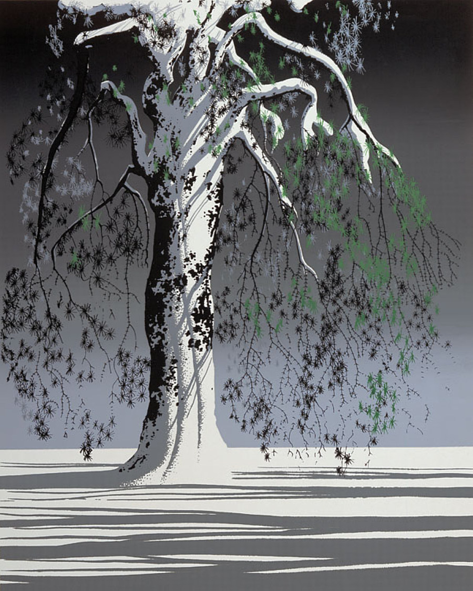

Final Report
Name: Chethna Kabeerdoss
Title:
Procedural modeling of 3D geometry using L-systems
Problem summary
Procedural modeling of stylized trees - mimic the 2D art of Ervind Earle (a landscape artist). Implementing rules of L-Systems to create 3D geometry. The 3D structure will also be governed by some patterns of fractals which can be represented using the L-System.
Previous work
There is no shortage of software packages available online to generate 2D/3D procedural geometry. I would like to use the support of existing works to created stylized trees inspired by artist Ervind Earle .I have links to some of the relevant articles/papers I found.
• Link 1 |
• Link 2 |
• Link 3 |
• Link 4 |
• Link 5
|
• Link 6 |
• Link 7 |
• Link 8
• Link 9 |
• L-System Commands
For this project I used a 3rd party software to render the created geometry- Houdini
Description of work
Based on the goals I listed in my project proposal I began this project by narrowing down the artist's work that I wanted to mimic. I chose Ervind Earle . His paintings are mostly of landscapes, cliffs and forests. I really like the way he represents trees in his paintings. They all seem to have self - similar patterns which looked very interesting. I decided to try and replicate some his stylized trees using L systems.
I picked 3 trees (linked below)



The next step was to learn turtle graphics which is useful for defining L-Systems , for modeling the stylized trees. I used this L-System Commands link primarly as a reference for the commands.
The final step was to render the geometry, for which I used Houdini's in-built renderer Mantra to render my procedurally created geometry.
Results
Tree 1 – I picked a tree I thought would be easy to start with my beginner's knowledge of turtle graphics. I started off with just writing rules for the base structure of the tree. The leaves of the tree are like repeating circles (squiggles). For this I constructed a rule set separately and joined it in between the rules for the base structure of the tree.
Tree 2 – This tree was a bit of a challange, as the base structure was not straight forward like the previous one. I started off with just writing rules for the base structure of the tree. The leaves of the tree are like little spheres made of intersecting lines.
Tree 3 – This tree was a bit of a challange, as the base structure grew upwards but the branches grew downwards. I started off with just writing rules for the base structure of the tree. The leaves of the tree are like little spheres made of intersecting lines.
Analysis of work
I was able to get up to 3 trees - fully rendered for the completion of this project, as I had said in my previous update.
Meeting goals – I was with the help of L-systems able to mimic the basic structure of the stylized tress.
Future work – I think I would work on getting them to look pretty. If I were to continue working on this I would like to add wind force to interact with the model, wherein the leaves would move according to the direction of the wind.